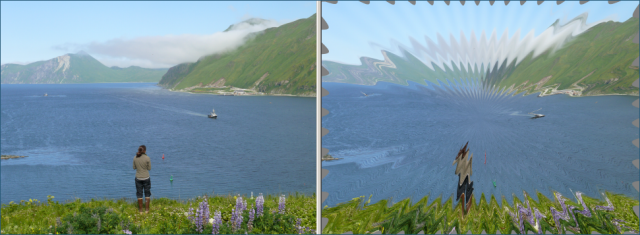

The Zoom Wave effect transforms the photo with waves radiating out from a center point. You
can specify the center point by clicking on the left (original) copy of the photo. You can use the
right (modified) copy for panning and zooming.
You can specify the wave amplitude, number of waves, the radial angle, and the wave zoom
factor. The wave zoom factor determines how "sharp" the waves are.
